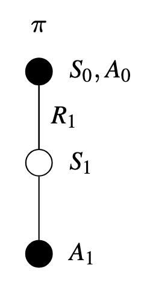

6.2 SARSA
To move from prediction to control, we must estimate the action-value function \(q_{\pi}(s, a)\) for the current behavior policy \(\pi\) — and ensure we update it for all state-action pairs \((s, a)\) encountered during interaction with the environment.
How can we leverage the Temporal Difference learning rule to approximate the optimal policy \(\approx \pi_{*}\) — while still exploring, ensuring every state-action \((s,a)\) pair is visited, and updating only from actions actually taken by the current policy \(\pi\)?
Suppose you’re using a music recommendation app:
- \(S\) — You’re in a particular mood or environment (e.g., studying, running, relaxing).
- \(A\) — The app suggests a song based on your current preferences.
- \(R\) — You either enjoy the song, skip it, or dislike it — giving implicit feedback.
- \(S', A'\) — The next song plays, and you make another decision.
In this case:

How can your music app learn what you like while still exploring new genres — using your actual listening behavior, one song at a time?
SARSA is an on-policy TD control method that updates action-value estimates based \(q_{\pi}(s, a)\) on the trajectory actually followed by the current policy \(\pi\) — including any exploration it performs.
\[ Q(S_{t},A_{t}) = Q(S_{t},A_{t}) + \alpha [ R_{t+1} + \gamma Q(S_{t+1},A_{t+1}) - Q(S_{t},A_{t})] \]

This rule uses every element of the quintuple of events (\(S_{t}, A_{t}, R_{t+1}, S_{t+1}, A_{t+1}\))
That’s SARSA: learning step-by-step from your real actions, even if your current “playlist” isn’t perfect.
Unlike Monte Carlo methods, which wait until the end of a full playlist (or episode) to update preferences, SARSA updates incrementally — after every song — using immediate feedback and your next action.